Menu des paramètres¶
Le menu des paramètres est divisé en plusieurs sections, décrites ci-dessous.
Paramètres généraux¶
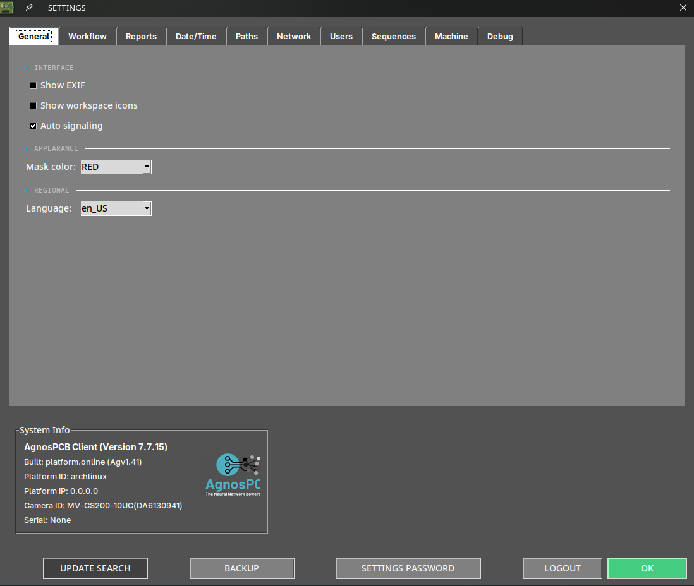
Afficher exif¶
Affiche les métadonnées de l'image actuelle dans la zone de travail principale.
Afficher les icônes de l'espace de travail¶
Active un ensemble de fonctionnalités dans la zone de travail principale. Pour en savoir plus sur ces fonctions, consultez la section suivante.
Signalisation automatique¶
Par défaut, le logiciel numérote chaque erreur après l'inspection. Lorsque cette option est désactivée, seule la zone concernée est mise en évidence en couleur, sans numéro.
Couleur du masque¶
Cette option vous permet de changer la couleur de l'erreur marquée. Lorsque la couleur de l'erreur marquée correspond à celle de la PCBA, il est conseillé de choisir une couleur plus contrastée afin de rendre les zones marquées plus visibles.
Langue¶
Change la langue de l'interface. Les langues actuellement disponibles sont : anglais, français, allemand, italien et espagnol.
Options de flux de travail¶
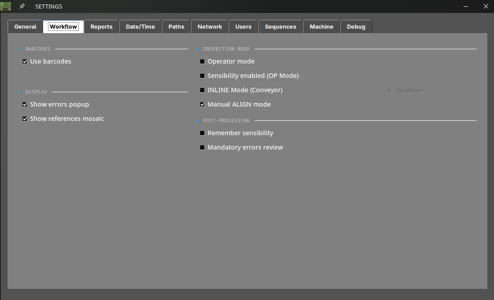
Utiliser les codes-barres¶
Active ou désactive la fonction de lecture de code-barres.
Afficher la fenêtre d'erreurs¶
En désactivant cette option, la fenêtre de rapport n'apparaîtra plus lors du signalement d'une erreur avec les flèches HAUT ou BAS. Les erreurs signalées seront générées avec l'étiquette "other" dans le rapport PDF final.
Afficher la mosaïque de références¶
En désactivant cette option, le menu mosaïque n'apparaîtra plus après la prise d'une image de RÉFÉRENCE.
Mode opérateur¶
L'activation de cette option masquera plusieurs fonctionnalités de l'interface, simplifiant l'utilisation du logiciel. Elle empêche également l'opérateur de modifier l'image de RÉFÉRENCE ou la sensibilité des inspections. Un mot de passe peut être ajouté afin que seul l'administrateur puisse désactiver cette option.
Sensibilité activée¶
Permet de modifier la sensibilité lorsque le logiciel est en mode opérateur.
Mode INLINE¶
Sélectionnez ce mode lorsque l'AOI est installée sur un convoyeur. Pour en savoir plus sur cette fonctionnalité, consultez la section suivante : Intégration en ligne de production
Mode d'alignement manuel¶
Activez cette option pour aligner manuellement les images de RÉFÉRENCE et d'UUI. Pour en savoir plus sur cette fonctionnalité, consultez la section suivante : Outil d'alignement manuel
Mémoriser la sensibilité¶
En activant cette option, le logiciel conservera la sensibilité d'inspection configurée après avoir réalisé une nouvelle inspection.
Révision obligatoire des erreurs¶
Si cette option est activée, le logiciel ne continuera pas à inspecter de nouveaux panneaux tant que toutes les erreurs détectées lors de l'inspection en cours n'auront pas été signalées comme erreurs ou faux positifs.
Options de rapport¶
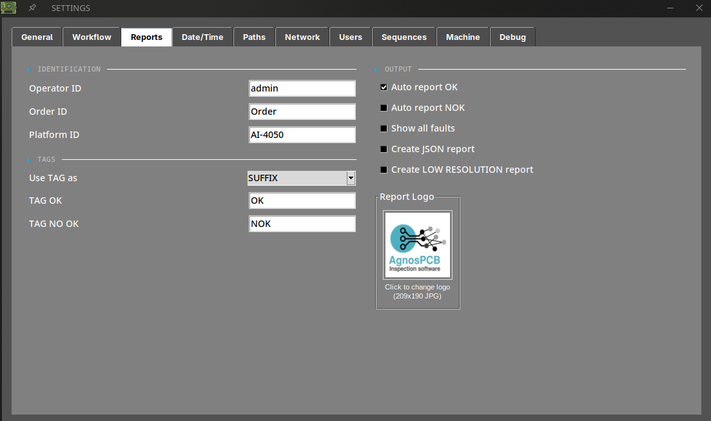
ID opérateur¶
Définit un identifiant pour l'opérateur actuel. Cet identifiant sera affiché dans le rapport PDF final une fois l'inspection terminée.
ID de commande¶
Définit un identifiant pour l'ordre de fabrication actuel. Cet identifiant sera affiché dans le rapport PDF final une fois l'inspection terminée.
ID de plateforme¶
Définit un identifiant pour l'AOI.
Utiliser le TAG comme¶
Définit le TAG (OK ou NOK) du rapport PDF final comme suffixe ou préfixe du nom de fichier.
TAG OK¶
Définit un TAG OK personnalisé pour le rapport PDF final.
TAG NO OK¶
Définit un TAG NO OK personnalisé pour le rapport PDF final.
Rapport automatique¶
Lorsque cette option est activée, un rapport PDF final étiqueté OK sera généré automatiquement si aucune erreur n'est détectée après l'inspection. Le rapport PDF final peut également être généré si des erreurs sont détectées pendant l'inspection.
Note
Lors de la génération automatique d'un rapport PDF, toutes les erreurs détectées seront marquées avec l'étiquette "unknown".
Afficher tous les défauts¶
Affiche toutes les erreurs détectées dans le rapport PDF, même si l'opérateur ne les a pas signalées.
Créer un rapport JSON¶
Génère un fichier JSON exploitable par une machine contenant les données de l'inspection, en plus du rapport PDF. Utilisez cette option lorsque les résultats doivent être traités par un autre système — un MES, un ERP ou une base de données de traçabilité — au lieu d'être lus par une personne.
Le fichier JSON est écrit dans le même dossier que le rapport PDF, à l'intérieur du répertoire PCB OUT.
Note
Il s'agit d'une fonctionnalité sous licence. Si l'option ne génère aucun fichier, contactez support@agnospcb.com pour vérifier si votre profil de compte l'inclut.
Créer un rapport BASSE RÉSOLUTION¶
Génère un rapport PDF supplémentaire de taille réduite. Le rapport standard continue d'être généré : cette option ajoute une copie plus légère, elle ne le remplace pas.
C'est utile lorsque les rapports doivent être envoyés par e-mail, archivés à long terme, ou transférés via une connexion lente ou limitée, où les images en pleine résolution rendraient le fichier trop volumineux.
Logo¶
Définit un logo pour le rapport PDF.
Options de date/heure¶
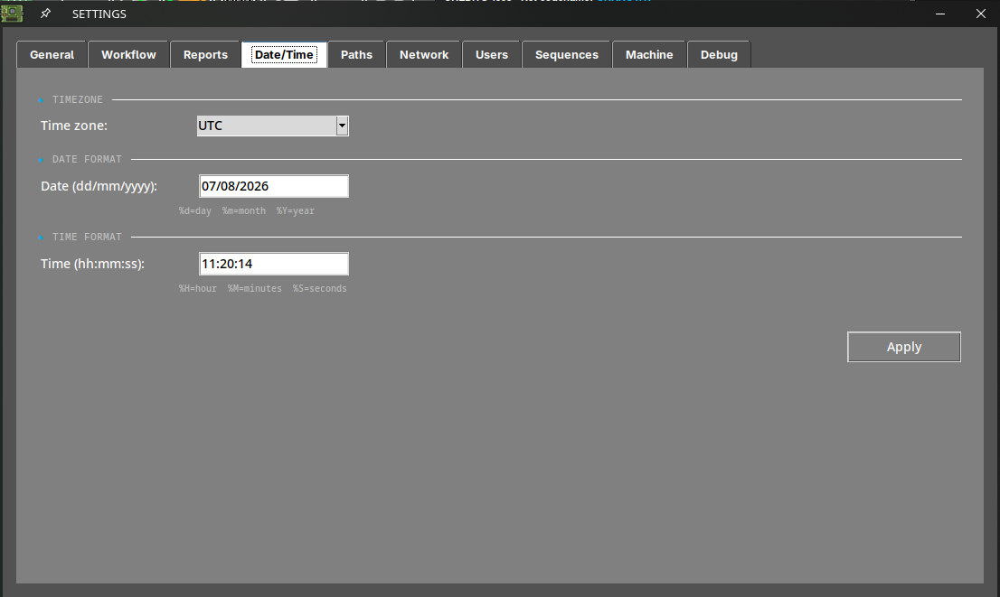
Fuseau horaire¶
Définit le fuseau horaire.
Date et heure¶
Définit le jour et l'heure.
Note
Pour appliquer les modifications, appuyez sur le bouton SET et redémarrez le système.
Option de chemin¶
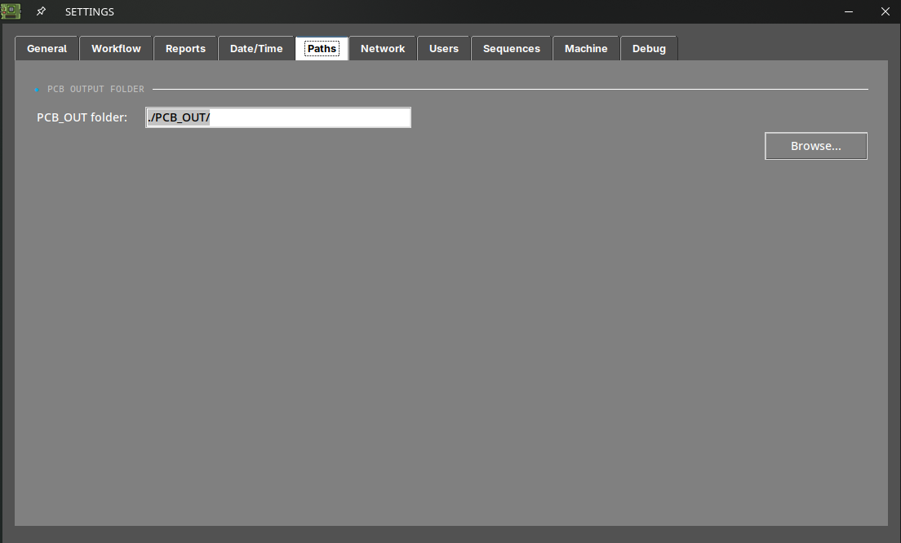
PCB OUT¶
Modifie le chemin où les inspections sont générées.
Options de partage¶
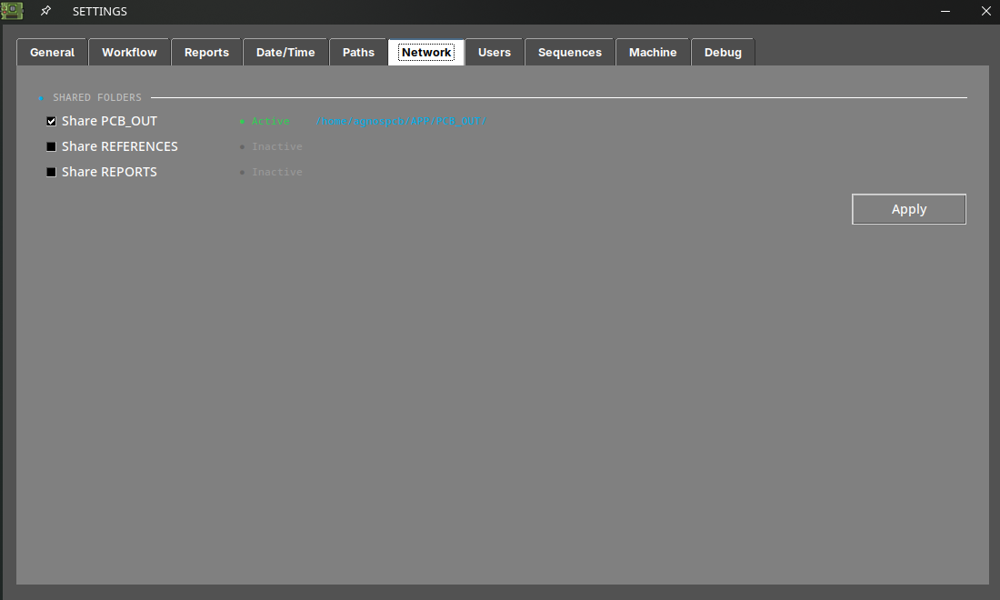
Partager les dossiers¶
En activant ces options, le système partagera automatiquement les dossiers PCB_OUT et REFERENCE sur votre réseau local. L'adresse d'accès sera affichée une fois l'option définie.
Note
Pour appliquer les modifications, appuyez sur le bouton Apply.
Note
Pour les unités OFFLINE, si vous devez changer l'interface réseau de votre unité, veuillez consulter l'article de configuration réseau.
Utilisateurs¶
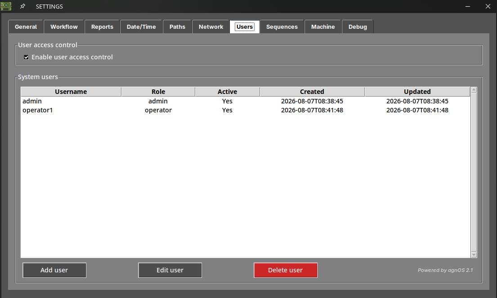
Cet onglet n'est disponible que pour les utilisateurs ayant le rôle admin. Il permet de créer les comptes autorisés à utiliser l'AOI, chacun avec un rôle admin ou operator, et d'exiger un nom d'utilisateur et un mot de passe à chaque démarrage du logiciel.
Pour activer Enable user access control, il faut qu'au moins un compte admin actif existe.
Pour en savoir plus sur cette fonctionnalité, consultez la section suivante : Contrôle d'accès des utilisateurs
Séquences¶
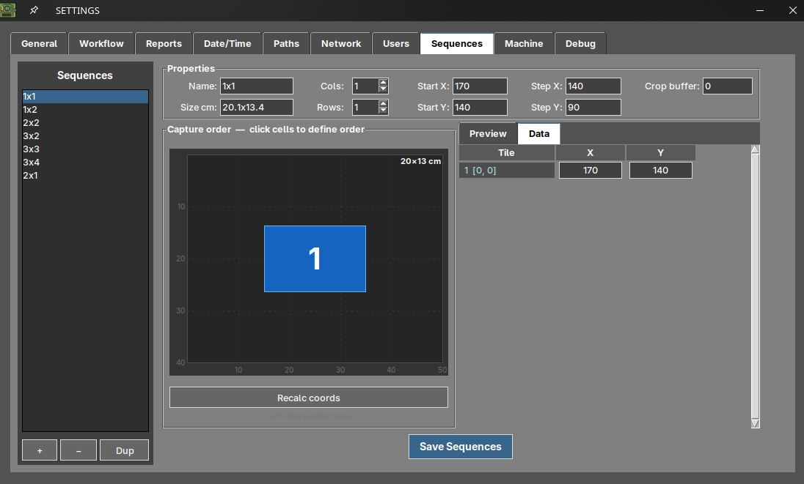
Cet onglet n'est disponible que pour les utilisateurs ayant le rôle admin. Il permet de définir vos propres séquences de capture, c'est-à-dire la grille de photographies que la caméra prend et assemble pour composer l'image d'une grande carte.
Utilisez-le lorsqu'aucune des séquences prédéfinies ne convient à votre carte. Les séquences que vous enregistrez ici apparaissent comme options CUSTOM dans la fenêtre de vue en direct lors de la prise d'une RÉFÉRENCE ou du lancement d'une inspection.
Pour en savoir plus sur cette fonctionnalité, consultez la section suivante : Séquences de capture personnalisées
Note
Cet onglet n'est pas affiché sur les unités configurées en mode Q1, qui ne réalisent qu'une seule capture.
Machine¶
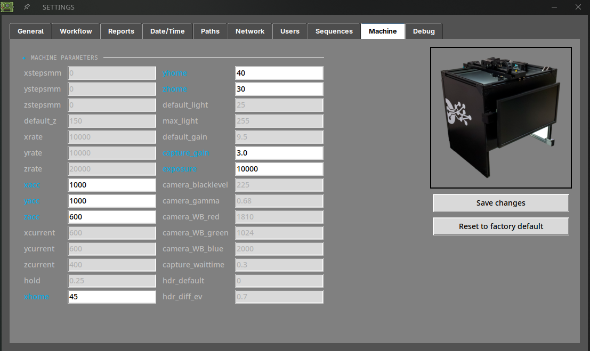
Cet onglet n'est disponible que pour les utilisateurs ayant le rôle admin. Il affiche les paramètres matériels de votre unité, stockés dans le fichier machine.json.
La plupart des valeurs sont grisées : elles sont affichées à titre indicatif seulement et ne peuvent pas être modifiées. Les champs surlignés en bleu sont les champs modifiables :
| Champ | Description |
|---|---|
| xacc / yacc / zacc | Accélération de chaque axe. |
| xhome / yhome / zhome | Décalage de la position d'origine de chaque axe. |
| capture_gain | Gain de la caméra pendant la capture. |
| exposure | Temps d'exposition de la caméra. |
Appuyez sur Save changes pour appliquer les nouvelles valeurs, ou sur Reset to factory default pour rétablir tous les paramètres à leur valeur d'origine.
Important
Ces paramètres influent sur le déplacement de la plateforme et sur la capture des images. Les modifier incorrectement peut dégrader la qualité d'image ou le mouvement des axes. Ne les modifiez que lorsque le support vous le demande.
Note
Cet onglet n'est pas affiché sur les unités sans plateforme XYZ.
Débogage¶
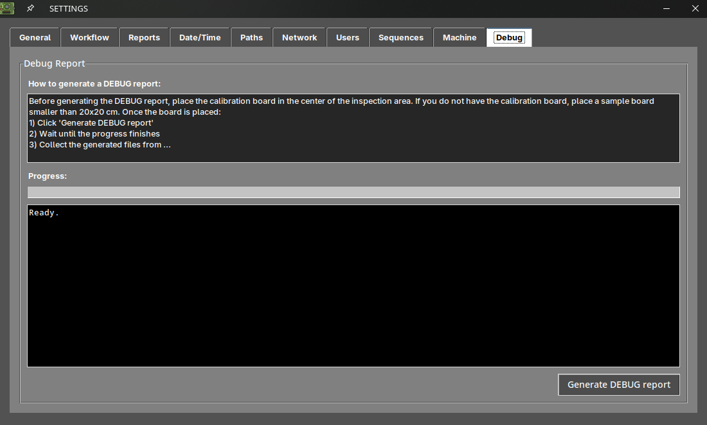
Cet onglet n'est disponible que pour les utilisateurs ayant le rôle admin. Il génère un rapport de diagnostic qui permet à notre équipe de support d'analyser le comportement de votre unité.
Pour le générer :
- Placez la carte de calibration au centre de la zone d'inspection. Si vous ne l'avez pas, utilisez une carte d'essai de moins de 20x20 cm.
- Appuyez sur Generate DEBUG report.
- Attendez que la barre de progression soit terminée. La zone de texte en dessous affiche l'avancement du processus.
- Récupérez les fichiers générés et envoyez-les à support@agnospcb.com.
Section informations¶
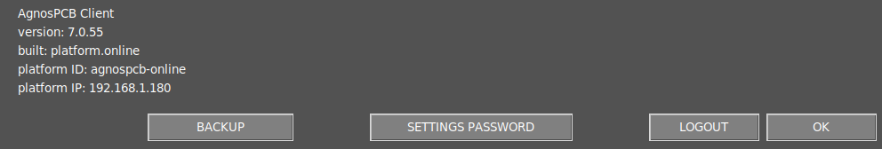
Informations AOI¶
Les informations de l'AOI sont affichées dans cette section.
Sauvegarde¶
Cette fonction génère automatiquement un fichier compressé de sauvegarde du dossier PCB_OUT. Le fichier de sauvegarde est stocké dans le dossier APP/BACKUP.
Mot de passe des paramètres¶
Définit un mot de passe pour accéder au menu des paramètres.
Note
Laissez le mot de passe vide pour désactiver l'exigence de mot de passe.